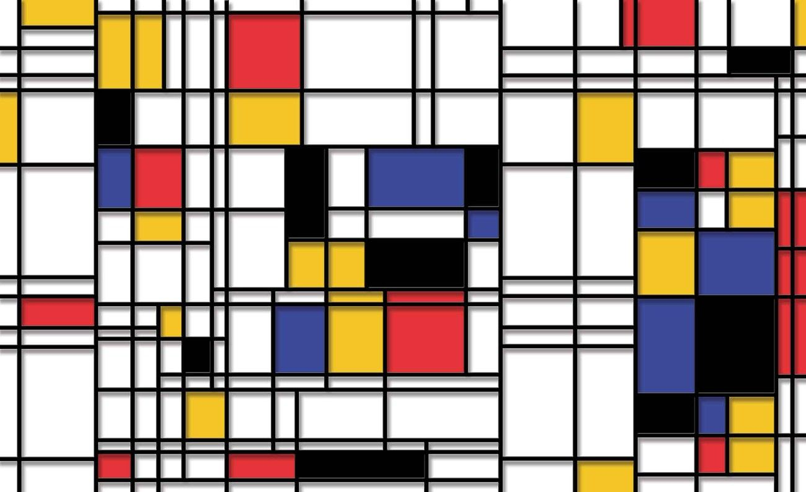
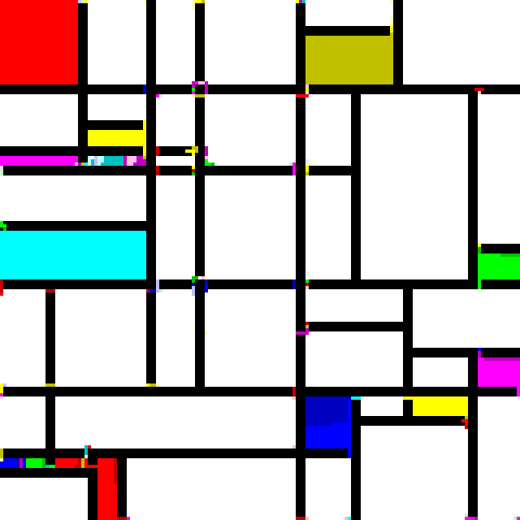

sPiet Interpreter [Python]
Python · OpenCV
Piet — The Programming Language
Piet is a visual programming language based on the artistic style
of the Dutch painter Piet Mondrian. In this language, colour represents instructions and pixel
count encodes data values. A single stack is used for all data storage.
Example Piet programs look like abstract pixel art.

The original Piet specification identifies 18 colours to represent instructions. This project
— sPiet — is an interpreter that goes one step further: it allows
the user to supply a custom colour scheme provided as a PNG with 18 pixels of different
colours. The same program logic can be written in any palette the user defines.

Architecture
The interpreter consists of three main components:
-
Tokenizer — Parses the image using OpenCV.
Adjacent pixels of the same colour form a code block; its size (pixel count) becomes the
data value pushed onto the stack. The colour transition between adjacent blocks encodes the
operation. These operations are stored as a list of tokens.
-
Data Stack — The only memory in the Piet language. The
tokenizer writes values to the stack. As the parser executes instructions, data is consumed
from (and sometimes written back to) the stack. All data is numeric; output can be in
integer or character format.
-
Parser — Takes the token list and dispatches the corresponding
stack operations. Some operations act on the top value; others act on the top two values.
The parser walks the token list from start to finish.